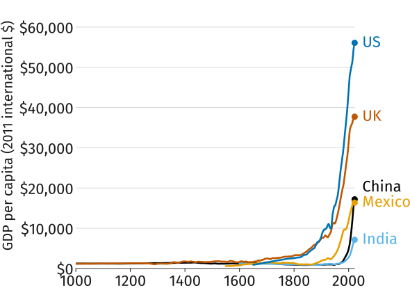
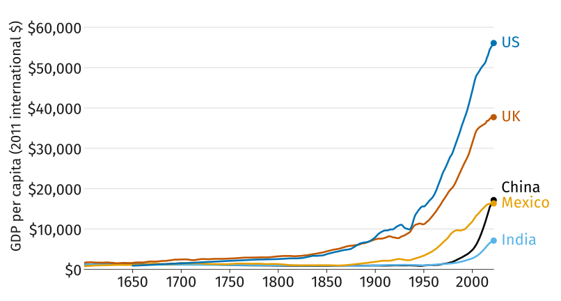
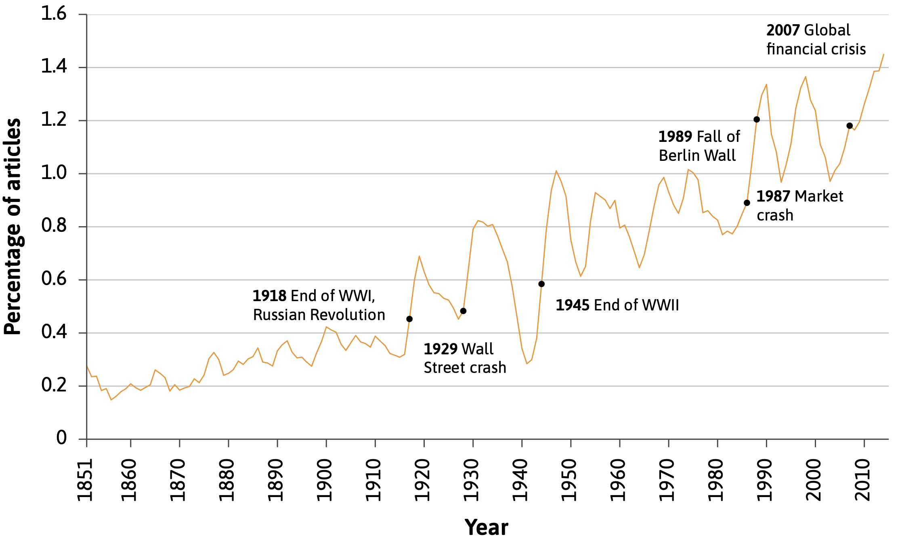
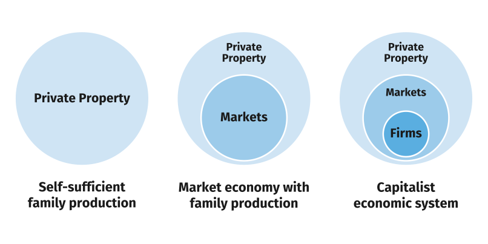
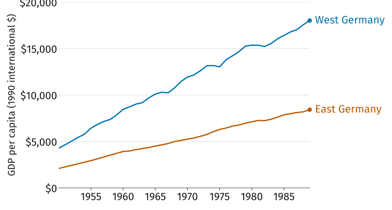
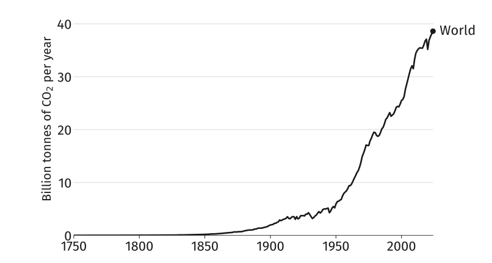
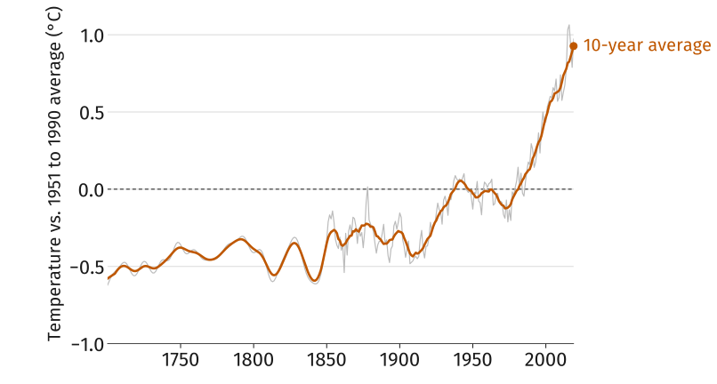
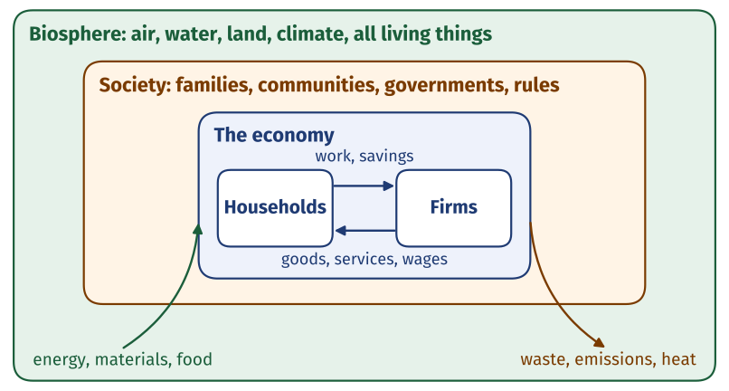

The Capitalist Takeoff:
Prosperity and Its Shadows
ECON 201: Principles of Microeconomics
Lecture 2
History’s Hockey Stick

This plot shows GDP per capita, a proxy for living standards, for five countries over the last millennium.
When do living standards start to rise? Estimate a year per country (worksheet, Activity 1), then compare with a neighbor.
Zooming In: 1600 to Today

Measuring Prosperity: GDP per Capita
GDP is a country’s output: everything it produces in a year, valued at market prices. That total is also everyone’s total income.
“It adds up everything from nails to toothbrushes, tractors, shoes, haircuts, management consultancy, street cleaning, yoga teaching, plates, bandages, books, and the millions of other services and products in the economy.” Diane Coyle, economist
Larger countries will have higher GDP simply because they have more people, so divide by population to get GDP per capita.
The Founding Question of Economics
- Why, over the past three centuries, have some countries prospered while others have not?
- This is one of the oldest and most important questions in economics
- In fact, Adam Smith, widely regarded as the father of modern economics, put it in the title of his most famous book: An Inquiry into the Nature and Causes of the Wealth of Nations
Adam Smith (1723–1790)
His most famous idea, the invisible hand: markets coordinate the decisions of millions of strangers with no one planning it.
“It is not from the benevolence of the butcher, the brewer, or the baker, that we expect our dinner, but from their regard to their own interest.”
- According to him, prosperity came from the division of labor/specialization, which is limited by the extent of the market.
- Pin factory example: ten workers, each doing one or two of 18 steps, made close to 50,000 pins a day. Working alone, none could have made twenty.
- However, that many pins need buyers far beyond the town. Canals and trade increased the extent of the market.
The Technological Revolution
![GDP per capita in the United Kingdom and the United States from 1700 to 1925, in 2011 US dollars, with a timeline of inventions marked along the curve: Newcomen's steam engine in 1712, the flying shuttle in 1733, the Bridgewater canal, spinning jenny, and Watt's steam engine in the 1760s, Arkwright's water-powered mill in 1779, the first railway locomotive in 1801, Stephenson's Liverpool railway in 1830, McCormick's reaper in 1834, the US transcontinental railroad in 1869, Bell's telephone in 1876, Edison's lightbulb in 1879, and Ford's assembly line in 1913. The UK line rises from about $2,500 to $8,000; the US line starts lower, overtakes the UK around 1880, and reaches about $11,000 by 1925.](img/tech.png)
Technology and Technological Progress
- The upward kink in the hockey stick coincided with the Industrial Revolution i.e. major technological advances in textiles, energy, and transportation.
- In everyday language, “technology” refers to machinery, equipment, and devices. In economics the word means something broader:
- Technology: A process that takes a set of materials and other inputs, including the work of people and machines, and creates an output. E.g. a cake recipe.
- Technological progress is a change in technology that reduces the amount of resources (labor, machines, land, energy, time) needed to produce a given amount of output.
The Capitalist Revolution
How did a world in which living conditions barely changed become one of continuous technological revolution, with each generation better off than the last?
A big part of the answer is the capitalist revolution: the emergence in the eighteenth century of a new way of organizing the economy that we now call capitalism. It raised what one worker could produce in two ways.
- Firms competing in markets had incentives to adopt new technology, and could afford capital no family could
- Firms and world markets allowed specialisation on an unprecedented scale
The Rise of Capitalism

Share of New York Times articles that mention “capitalism”, 1851 to 2015. Source: CORE Figure 1.13.
Defining Capitalism
In everyday speech “capitalism” can mean many different things. Here we define it formally as
Capitalism is an economic system characterized by a particular combination of institutions: private property, markets, and firms
- An economic system is a way of organizing the economy that is distinctive in its basic institutions
- Institutions are the laws and informal rules that regulate social interactions among people, and between people and the biosphere, sometimes also termed the rules of the game
The Three Institutions of Capitalism
- Private property: the right to exclude others from the use of something, to benefit from its use, and to exchange it with others
- Markets: a way of connecting people who may mutually benefit by exchanging goods and services, through a process of buying and selling. Taking part is voluntary, and buyers and sellers compete
- Firms: a way of organizing production in which one or more individuals own a set of capital goods, pay wages to employees, direct their work, and sell the goods and services produced on markets with the intention of making a profit
From Family Production to Capitalism

Worksheet, Activity 2: pair up and work through both questions.
Did Capitalism Cause the Take-off?
- Capitalism spread and living standards rose at the same time. But correlation is not causation: something else could have caused both, or rising living standards might have caused capitalism to spread
- To find out, economists look for a natural experiment: a study that exploits a difference in conditions between two populations that arose for external reasons, such as a difference in laws or policies
- The division of Germany after the Second World War is one. Living standards in the two regions were similar before the war; afterwards the same people, with the same history, lived under a capitalist West and a centrally planned East
Central Planning versus Capitalism

Why Not Everywhere?
Most countries today are capitalist. Why has sustained growth reached some and not others? Two parts of the answer:
- Colonialism: in India, living standards did not rise substantially until well after independence from British rule. In much of Latin America, independence in the early nineteenth century did not bring a change in economic fortunes
- Institutions and politics: not all capitalist economies are equally successful. Private property, markets, or firms may fail, and governments differ in how well they regulate them and provide essential public goods such as infrastructure, education, and the rule of law
The Other Hockey Stick

World carbon dioxide emissions from fossil fuels and industry, 1750 to 2024.
Rising Temperatures

The Economy and the Biosphere

What Is Economics?
Economics is the study of how people interact with each other and with their natural environment in producing and acquiring their livelihoods, and how this changes over time and differs across societies.
- In the next two weeks: how people and firms make decisions, and why specialization and trade make everyone better off
- Later in the course: how firms set prices, how markets with many buyers and sellers work, and when markets fail, including in their effects on the environment
What to Do Next
- Read sections 1.2, 1.5, and 1.8 closely, with the guided reading questions in hand; skim the rest of the assigned reading
- Go over the slides and the lecture notes, both posted on the course website
- Work the practice problems
- Quiz 1 is Monday: 10 minutes, four multiple choice and one written answer, all of it straight from the practice problems and the guided reading
Sources
- GDP per person: Maddison Project Database 2023 (Bolt and van Zanden), via Our World in Data. Five countries shown; ten-year moving average.
- CO\(_2\) emissions: Global Carbon Budget 2024 (Friedlingstein et al.), via Our World in Data.
- Northern Hemisphere temperature: NASA GISTEMP, via Our World in Data (CORE Figure 1.2b).
- Two Germanies: Conference Board, Total Economy Database 2015, via Our World in Data (CORE Figure 1.16).
- Technological revolution and capitalism in the news: CORE Econ, The Economy 2.0: Microeconomics, Figures 1.5 and 1.13. The institutions diagram is adapted from CORE Figure 1.14.
ECON 201 · Lecture 2